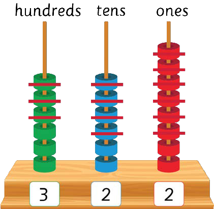

3.
Subtract hundreds: 6 − 3 = 3.
Write 3 in the hundreds place.
Write 3 in the hundreds place.
668
−346
322
Or

Therefore, the answer is 322.
Exercise 3
Write the answer in each question.
1.
178
−175
2.
486
−244
3.
490
−250
4.
478
−470
5.
445
−334
6.
384
−251
62
62 Step 3. Subtract hundreds. 6 minus 3 equals 3. Write 3 in the hundreds place. The vertical subtraction is 668 minus 346 equals 322. Or, use the counting frame. It shows 6 counters in the hundreds column, 6 counters in the tens column, and 8 counters in the ones column. 3 hundreds, 4 tens, and 6 ones are crossed out. This leaves 3 hundreds, 2 tens, and 2 ones. Therefore, the answer is 322. Exercise 3. Write the answer in each question. Question 1. 178 minus 175. Question 2. 486 minus 244. Question 3. 490 minus 250. Question 4. 478 minus 470. Question 5. 445 minus 334. Question 6. 384 minus 251. ARITHMETICS PUPIL'S STD 2.indd 62 06/11/2024 17:23